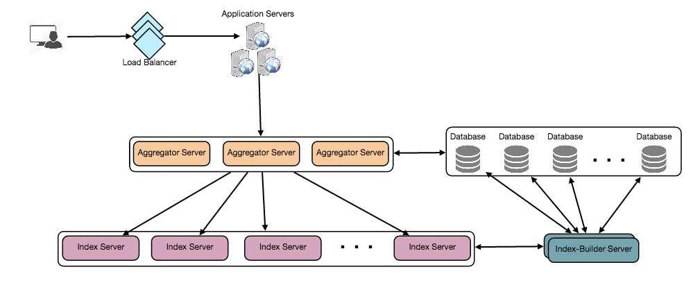

Designing Twitter Search
Design a service that stores all user tweets and lets us search over them efficiently using a distributed inverted index.
Twitter is one of the largest social networking services where users can share photos, news, and text-based messages. In this chapter, we will design a service that can store and search user tweets.
Similar Problems: Tweet search.
Difficulty Level: Medium
Twitter users can update their status whenever they like. Each status consists of plain text, and our goal is to design a system that allows searching over all the user statuses.
- Let’s assume Twitter has 1.5 billion total users with 800 million daily active users.
- On the average Twitter gets 400 million status updates every day.
- Average size of a status is 300 bytes.
- Let’s assume there will be 500M searches every day.
- The search query will consist of multiple words combined with AND/OR.
We need to design a system that can efficiently store and query user statuses.
Storage Capacity: Since we have 400 million new statuses every day and each status on average is 300 bytes, therefore total storage we need, will be:
400M * 300 => 112GB/dayTotal storage per second:
112GB / 86400 sec ~= 1.3MB/secondWe can have SOAP or REST APIs to expose functionality of our service; following could be the definition of search API:
search(api_dev_key, search_terms, maximum_results_to_return, sort, page_token)Parameters:
api_dev_key (string): The API developer key of a registered account. This will be used to, among other things, throttle users based on their allocated quota.
search_terms (string): A string containing the search terms.
maximum_results_to_return (number): Number of status messages to return.
sort (number): Optional sort mode: Latest first (0 - default), Best matched (1), Most liked (2).
page_token (string): This token will specify a page in the result set that should be returned.
Returns: (JSON)
A JSON containing information about a list of status messages matching the search query. Each result entry can have the user ID & name, status text, status ID, creation time, number of likes, etc.
At the high level, we need to store all the statues in a database, and also build an index that can keep track of which word appears in which status. This index will help us quickly find statuses that users are trying to search.
High level design for Twitter search
1. Storage: We need to store 112GB of new data every day. Given this huge amount of data, we need to come up with a data partitioning scheme that will be efficiently distributing it onto multiple servers. If we plan for next five years, we will need following storage:
112GB * 365days * 5 => 200 TBIf we never want to be more than 80% full, we would need 240TB. Let’s assume that we want to keep an extra copy of all the statuses for fault tolerance, then our total storage requirement will be 480 TB. If we assume a modern server can store up to 4TB of data, then we would need 120 such servers to hold all of the required data for next five years.
Let’s start with a simplistic design where we store our statuses in a MySQL database. We can assume to store our statuses in a table having two columns, StatusID and StatusText. Let’s assume we partition our data based on StatusID. If our StatusIDs are system-wide unique, we can define a hash function that can map a StatusID to a storage server, where we can store that status object.
How can we create system wide unique StatusIDs? If we are getting 400M new statuses each day, then how many status objects we can expect in five years?
400M * 365 days * 5 years => 730 billionThis means we would need a five bytes number to identify StatusIDs uniquely. Let’s assume we have a service that can generate a unique StatusID whenever we need to store an object (we will discuss this in detail later). We can feed the StatusID to our hash function to find the storage server and store our status object there.
2. Index: What should our index look like? Since our status queries will consist of words, therefore, let’s build our index that can tell us which word comes in which status object. Let’s first estimate how big our index will be. If we want to build an index for all the English words and some famous nouns like people names, city names, etc., and if we assume that we have around 300K English words and 200K nouns, then we will have 500k total words in our index. Let’s assume that the average length of a word is five characters. If we are keeping our index in memory, we would need 2.5MB of memory to store all the words:
500K * 5 => 2.5 MBLet’s assume that we want to keep the index in memory for all the status objects for only past two years. Since we will be getting 730B status objects in 5 years, this will give us 292B status messages in two years. Given that, each StatusID will be 5 bytes, how much memory will we need to store all the StatusIDs?
292B * 5 => 1460 GBSo our index would be like a big distributed hash table, where ‘key’ would be the word, and ‘value’ will be a list of StatusIDs of all those status objects which contain that word. Assuming on the average we have 40 words in each status and since we will not be indexing prepositions and other small words like ‘the’, ‘an’, ‘and’ etc., let’s assume we will have around 15 words in each status that need to be indexed. This means each StatusID will be stored 15 times in our index. So total memory will need to store our index:
(1460 * 15) + 2.5MB ~= 21 TBAssuming a high-end server has 144GB of memory, we would need 152 such servers to hold our index.
We can shard our data based on two criteria:
Sharding based on Words: While building our index, we will iterate through all the words of a status and calculate the hash of each word to find the server where it would be indexed. To find all statuses containing a specific word we have to query only that server which contains this word.
We have a couple of issues with this approach:
- What if a word becomes hot? There would be a lot of queries on the server holding that word. This high load will affect the performance of our service.
- Over time some words can end up storing a lot of StatusIDs compared to others, therefore, maintaining a uniform distribution of words while statuses are growing is quite difficult.
To recover from these situations either we have to repartition our data or use Consistent Hashing.
Sharding based on the status object: While storing, we will pass the StatusID to our hash function to find the server and index all the words of the status on that server. While querying for a particular word, we have to query all the servers, and each server will return a set of StatusIDs. A centralized server will aggregate these results to return them to the user.

Detailed component design
What will happen when an index server dies? We can have a secondary replica of each server, and if the primary server dies it can take control after the failover. Both primary and secondary servers will have the same copy of the index.
What if both primary and secondary servers die at the same time? We have to allocate a new server and rebuild the same index on it. How can we do that? We don’t know what words/statuses were kept on this server. If we were using ‘Sharding based on the status object’, the brute-force solution would be to iterate through the whole database and filter StatusIDs using our hash function to figure out all the required Statuses that will be stored on this server. This would be inefficient and also during the time when the server is being rebuilt we will not be able to serve any query from it, thus missing some Statuses that should have been seen by the user.
How can we efficiently retrieve a mapping between Statuses and index server? We have to build a reverse index that will map all the StatusID to their index server. Our Index-Builder server can hold this information. We will need to build a Hashtable, where the ‘key’ would be the index server number and the ‘value’ would be a HashSet containing all the StatusIDs being kept at that index server. Notice that we are keeping all the StatusIDs in a HashSet, this will enable us to add/remove Statuses from our index quickly. So now whenever an index server has to rebuild itself, it can simply ask the Index-Builder server for all the Statuses it needs to store, and then fetch those statuses to build the index. This approach will surely be quite fast. We should also have a replica of Index-Builder server for fault tolerance.
To deal with hot status objects, we can introduce a cache in front of our database. We can use Memcache , which can store all such hot status objects in memory. Application servers before hitting backend database can quickly check if the cache has that status object. Based on clients’ usage pattern we can adjust how many cache servers we need. For cache eviction policy, Least Recently Used (LRU) seems suitable for our system.
We can add Load balancing layer at two places in our system 1) Between Clients and Application servers and 2) Between Application servers and Backend server. Initially, a simple Round Robin approach can be adopted; that distributes incoming requests equally among backend servers. This LB is simple to implement and does not introduce any overhead. Another benefit of this approach is if a server is dead, LB will take it out of the rotation and will stop sending any traffic to it. A problem with Round Robin LB is, it won’t take server load into consideration. If a server is overloaded or slow, the LB will not stop sending new requests to that server. To handle this, a more intelligent LB solution can be placed that periodically queries backend server about their load and adjusts traffic based on that.
How about if we want to rank the search results by social graph distance, popularity, relevance, etc?
Let’s assume we want to rank statuses on popularity, like, how many likes or comments a status is getting, etc. In such a case our ranking algorithm can calculate a ‘popularity number’ (based on the number of likes etc.), and store it with the index. Each partition can sort the results based on this popularity number before returning results to the aggregator server. The aggregator server combines all these results, sort them based on the popularity number and sends the top results to the user.